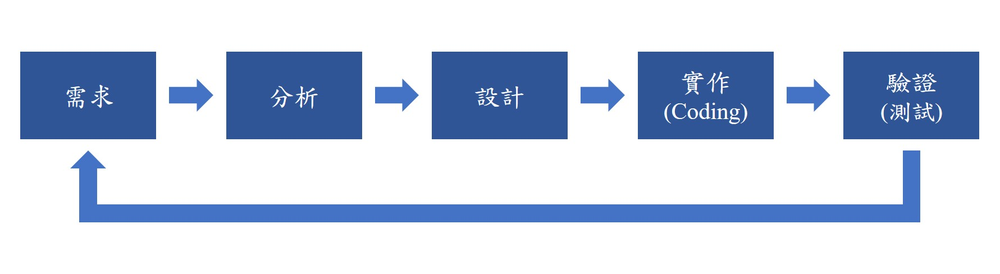
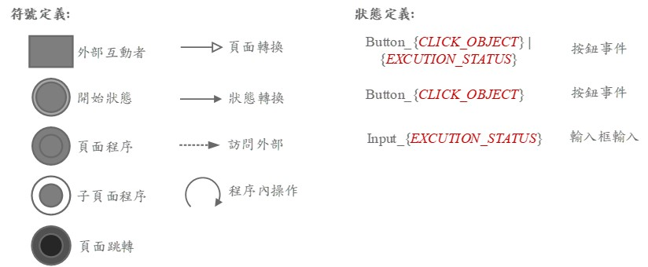

UI/UX FSM
什麼是FSM?
FSM的全名為「有限狀態」(Finite State Machine)，細節我就不贅述了，自行上網查吧! 讀電子系的你，不應該不知道什麼是FSM，但在本章節會描述我們利用FSM來做什麼，並且為什麼本章節叫做UI/UX FSM。
UI/UX是什麼?
UI(User Interface): 使用者與產品溝通的介面。ex: 你在IG頁面上看到的那些方框、排版、按鈕位置、現實動態欄位等等，這一系列介面，就是UI，且它包括了設計字體大小、美觀呈現、視覺效果等等。
UX(User Experience): 使用者在使用產品時的感受。ex: 你在IG上滑動的時候，會有一種流暢感，這就是UX，且它包括了使用者的操作流程、使用者的情感反應、使用者的需求等等。
FSM的好處
當今天專案是自己設計、自己開發前端、自己開發後端、自己測試、自己blabla..，任何項目都是你自己的時候，你大可以坦蕩的說: 幹嘛畫什麼FSM? 但倘若這個專案是多人協作需要溝通與多人測試、是一個產品需要維護、是會延續下去，並且你想讓這過程中的知識被留下，那你需要注意這些設計圖。
UI/UX FSM
專案的開發原則上會基於此流程進行，不斷輪迴，從定義與盤整完需求-> 分析實作方法與可行性-> 設計系統架構-> 開始Coding-> 階段性驗證與測試-> 確認需求是否完成或可以如何調整-> …-> 結案。
而UI/UX FSM由上面這張圖來看，會被定位在設計與驗證。你可以能會覺得: 疑，UI/UX FSM確實是在設計沒錯，但為什麼跟驗證(測試) 有關? 答案是因為: 你的系統當初怎麼設計，最終流程就應該如設計時一致，包括FSM中的每個狀態、輸入/輸出、事件、動作…，一系列流程都應該跟你的設計一致，缺一不可。
延伸閱讀: Integration test - UI Test <//>
UI/UX FSM標準規範
為此，我定義了繪製UI/UX FSM的標準格式，你可以利用Microsoft Visio進行繪製，學校有提供免費的Visio軟體可以下載。
1. FSM符號定義
外部互動者: 流程會訪問到外部，並非系統中的流程。ex: 需要與管理員取得License。
開始狀態: UI/UX的起點。
頁面程序: 該頁面內會運行的程序。
子頁面程序: 該頁面又跳出的子頁面程序。
頁面跳轉: 轉換頁面。
頁面轉換: 從某個Page跳轉到另一個Page。
狀態轉換: 頁面內因觸發某事件導致狀態變換。
訪問外部: 該頁面程序因為某事件觸發而訪問外部。
程序內操作: 頁面內觸發事件後不跳轉，僅在原本頁面做處理。
Button_{CLICK_OBJECT}｜{EXCUTION_STATUS}: 頁面內按下某個按鈕觸發事件｜頁面後端針對該事件做的一系列行為。
Button_{CLICK_OBJECT}: 頁面內的按鈕事件
Input_{EXCUTION_STATUS}: 頁面內輸入框｜頁面內針對輸入做的一系列行為。